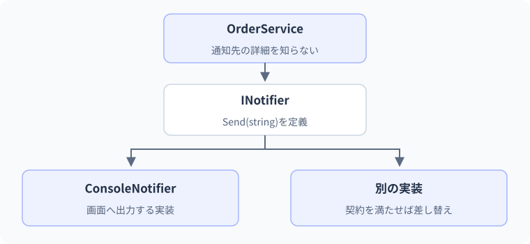

インターフェイスと差し替え
利用側と実装の間の契約。
通知先を画面から記録用の部品へ変えても、学習完了の処理は変えたくありません。利用側が必要とするSendだけを取り出し、実装を外から渡してみます。
要点
- interfaceを実装して利用する
- 依存性注入をフレームワークなしで理解する
class ConsoleSender : IMessageSender { ... }利用する操作を契約にする
インターフェイスを作る理由は「設計らしく見せるため」ではありません。利用側が必要とする操作を決め、メール・コンソール・テスト用の記録先などを交換しても利用側の処理を変えずに済む境界を作るためです。最初はDIコンテナーを使わず、newして渡すところから学びます。
実装ではなく能力に依存する
interfaceは呼び出し側が必要とする操作を表す契約です。IMessageSenderのSendさえ使えれば、メール送信か画面表示かを呼び出し側が知る必要はありません。C#ではインターフェイス名にIを付ける慣習があります。クラスは複数のインターフェイスを実装できます。
利用側が必要な契約だけを見る
学習完了処理が「メッセージを送る」ことだけを必要としているなら、IMessageSender.Send(string message)が境界になります。StudyServiceはメール設定、接続先、コンソールの色などを知る必要がありません。具体的な送信方法ではなく、必要な操作へ依存するようにします。
C#ではclass ConsoleSender : IMessageSenderと書き、クラス継承と同じコロン記号でインターフェイス実装を表します。右側の型がクラスかインターフェイスかを確認して読み分けます。一般的な暗黙の実装では実装メソッドをpublicにします。明示的実装という別の書き方もありますが、まず公開された操作が契約を満たす基本形を押さえます。
学習完了を知らせるサービスは、画面へどう出力するかではなく、通知できることを必要とします。
Send(string message)利用側が必要な操作の契約
Console.WriteLineで表示契約を実現する一つの実装
IMessageSenderを受け取るどの実装かに依存せず通知する
利用側がConsoleSender専用の操作を直接使い始めると、差し替えが難しくなります。契約に必要な操作を絞る意味をここで確認します。
実装を外から受け取る
依存性注入は外から渡すこと
利用側がnew ConsoleSender()を内部で固定すると、テスト時も同じ実装に依存します。コンストラクターでIMessageSenderを受け取れば、別の実装へ差し替えられます。これが依存性注入、DIです。DIコンテナーは受け渡しを自動化する道具であり、DIの必須条件ではありません。
コンストラクター注入は普通のオブジェクト生成
new StudyService(new ConsoleSender())は、必要な依存オブジェクトを外側から渡す依存性注入です。専用のフレームワークを使わないとDIにならないわけではありません。サービスの内部でnew ConsoleSender()を固定してしまうと、別の送信先へ変更するためにサービスの内部も修正する必要が出ます。
コンストラクターでIMessageSenderを受け取ってフィールドへ保持すると、利用者は依存関係を生成時に把握できます。必須の依存を後からプロパティへ設定させる方式では、設定前に使う状態が生まれるため、必須ならコンストラクターで要求する方が分かりやすくなります。nullを拒否するガードも、型の契約を守るために検討します。
通知サービスへ実装を渡す
var service = new StudyService(new ConsoleSender());
service.Complete();
public interface IMessageSender
{
void Send(string message);
}
public class ConsoleSender : IMessageSender
{
public void Send(string message) => Console.WriteLine(message);
}
public class StudyService
{
private readonly IMessageSender sender;
public StudyService(IMessageSender sender) => this.sender = sender;
public void Complete() => sender.Send("学習完了");
}この例では、プログラムの入口でConsoleSenderを作り、StudyServiceへ渡します。DIコンテナーは使っていません。
- 入口ConsoleSender
- 入口StudyService
- StudyServiceConsoleSender
- ConsoleSenderConsoleSender
依存性注入はまず普通の引数の受け渡しとして理解できます。サービス内部で通知先を固定しなければ、別の実装を入口から渡せます。
想定出力
処理順
- ConsoleSenderを作り、StudyServiceへ渡す。
- StudyServiceは具体的なクラスではなくIMessageSenderとして保持する。
- CompleteからSendを呼ぶと、渡された実装が実行される。
実例：注文サービスへ通知処理を渡す
注文確定後の通知だけを別クラスへ分けます。
var service = new OrderService(new ConsoleNotifier());
service.Confirm("A001");
interface INotifier { void Send(string message); }
class ConsoleNotifier : INotifier
{
public void Send(string message) => Console.WriteLine(message);
}
class OrderService
{
private readonly INotifier notifier;
public OrderService(INotifier notifier) { this.notifier = notifier; }
public void Confirm(string id) => notifier.Send($"注文{id}を確定しました");
}このコードの図解：利用側と実装の間の契約

想定出力
注文A001を確定しました処理と値の変化
- 実装を生成ConsoleNotifierを用意する
- コンストラクターOrderServiceへINotifierとして渡す
- Confirm具体的な通知先を知らずにSendを呼ぶ
テスト時には、通知内容を保存するだけの実装へ差し替えられます。
通知を送らずに送信内容を記録する
var sender = new RecordingSender();
var service = new StudyService(sender);
service.Complete("C#");
Console.WriteLine(sender.Messages.Count);
Console.WriteLine(sender.Messages[0]);
public interface IMessageSender { void Send(string message); }
public sealed class RecordingSender : IMessageSender
{
public List<string> Messages { get; } = new();
public void Send(string message) => Messages.Add(message);
}
public sealed class StudyService
{
private readonly IMessageSender sender;
public StudyService(IMessageSender sender)
=> this.sender = sender ?? throw new ArgumentNullException(nameof(sender));
public void Complete(string title) => sender.Send($"{title}を完了");
}出力
| 段階 | 値・状態 | 読み解き |
|---|---|---|
| 生成 | RecordingSenderを一つ作る | 実ネットワークを使わない |
| 注入 | StudyServiceはIMessageSenderとして保持 | 具体的な記録方式を知らない |
| Complete | C#を完了という文字列をSendへ渡す | 利用側の責務は適切なメッセージの生成 |
| 記録 | Messagesへ一件追加 | テスト用実装が呼び出しを観測可能にする |
| 確認 | 件数1と内容を表示 | 通信成功ではなく呼び出し内容を検証 |
テスト用の差し替えと抽象化の範囲
抽象化にも費用がある
すべてのクラスに機械的にinterfaceを作る必要はありません。外部通信、現在時刻、保存処理など、差し替えたい境界から始めます。契約を小さくすると実装やテストが簡単になります。使われない将来の機能を大量に契約へ追加すると、すべての実装へ変更が広がります。
テストダブルは本物の代わりになる小さな実装
実際のメールを送ってテストすると、通信や利用料金、送信ミスが学習の障害になります。RecordingSenderのように送信文をリストへ追加するだけの実装なら、どんな文が送られたかをメモリ上で検証できます。これは通信のテストではなく、「利用側が契約をどう使ったか」のテストです。
差し替えたから本物との接続確認が不要になるわけではありません。送信ライブラリの設定、認証、タイムアウトは別の統合テストで確認します。単体テストでどこを偽物にしたか明記すると、テストが保証する範囲を過大に説明せずに済みます。Lesson 26と32でこの境界をさらに整理します。
テストでは画面表示の代わりに、受け取ったメッセージを記録する実装を渡せます。
ConsoleSenderを渡すメッセージを表示する
RecordingSenderを渡すメッセージを記録して比較する
StudyService.Complete()Sendを呼ぶ手順は同じ
記録用の実装で通知内容を確かめても、実際の外部送信が成功した証明にはなりません。何を差し替え、何を確認したかを分けます。
小さな契約と過剰な抽象化の境界
大きなIApplicationの中へ保存・送信・計算・画面更新を全部入れると、利用側は不要な機能にも依存してしまいます。必要な役割ごとに小さい契約を作る方が、差し替えとテストの焦点が明確になります。一方、すべてのクラスに機械的に同じメソッド一覧のインターフェイスを作ると、ファイルだけが増える場合もあります。
差し替え先がある、外部I/Oがある、テストで時間や乱数を固定したい、複数の実装が必要、といった具体的な理由から境界を作ります。インターフェイスは実装の品質やスレッド安全性まで自動保証しないため、エラーの扱い、順序、キャンセル対応など必要な振る舞いは仕様として記述します。
C#仕様の整理
| 観点 | C#での扱い | 読み方・設計上の要点 |
|---|---|---|
| 実装の宣言 | class Type : IInterface | C#では継承と実装のどちらも:を使う |
| 利用側の型 | 同様にインターフェイス型で参照 | 具体実装へキャストしなくて済む契約にする |
| DI | 外側から依存を渡す | コンテナーなしでも成立する設計 |
| テスト用実装 | 同様に契約を実装した代替物を作る | 外部接続自体を検証しているわけではない |
よくある間違いと修正
内部でnewしていて差し替えが効かない
修正箇所: Serviceの依存オブジェクトの生成位置
修正前
class Service
{
private readonly ConsoleSender sender = new();
}修正後
var service = new Service(new ConsoleSender());
service.Notify();
interface ISender { void Send(string message); }
class ConsoleSender : ISender
{
public void Send(string message) => Console.WriteLine(message);
}
class Service
{
private readonly ISender sender;
public Service(ISender sender) => this.sender = sender ?? throw new ArgumentNullException(nameof(sender));
public void Notify() => sender.Send("完了");
}修正後の確認
- ConsoleSenderで完了を表示
- 別のISender実装へ変更してもServiceは変更不要
- nullの依存は生成時に拒否
基礎・標準・応用演習
C#実行環境：.NET 10 SDK
基礎演習
IPriceCalculatorのCalculate(decimal price)を実装するTenPercentOffを作り、1000円を900円にする処理をインターフェイス型から呼んでください。
開始コード
// IPriceCalculatorとTenPercentOffを定義する。入力例・前提条件
元価格1000mをTenPercentOffへ渡し、IPriceCalculator型から呼ぶ。
考え方のヒント
実装メソッドを契約に合わせ、価格へ0.9mを掛ける。
解答例と確認ポイント
IPriceCalculator calculator = new TenPercentOff();
Console.WriteLine(calculator.Calculate(1000m).ToString("0"));
public interface IPriceCalculator
{
decimal Calculate(decimal price);
}
public class TenPercentOff : IPriceCalculator
{
public decimal Calculate(decimal price) => price * 0.9m;
}| 解答で確認する条件 | 確認方法 |
|---|---|
| 900が得られる。 | コードと想定結果を照合 |
| 呼び出し側の変数型がIPriceCalculatorである。 | コードと想定結果を照合 |
処理と結果の読み解き
呼び出し側が知るのはCalculateの契約。具体的なTenPercentOffが1000から900を返し、インターフェイスの変数は結果を受け取る。
よくある別解と選び方
10%を引く式price-price*0.1mでも同じ値になる。この課題は計算だけでなく共通の型から呼ぶ点を確認する。
よくある間違いと確認箇所
実装を作っても、利用側を具体型へ固定したままでは差し替えの学習にならない。publicの契約も確認する。
実務例：割引方式を交換しても呼び出し側の操作を変えない形にできる。
標準：同じ呼び出しで二つの計算方式
IPriceCalculatorを実装するRegularPriceとSalePriceを作り、1000に対して1000と800を返します。インターフェイスの配列をループしてください。
- 通常はそのまま返す
- 割引はdecimalの0.8mを掛ける
- 利用側に実装別の条件分岐を書かない
開始コード
// 標準：同じ呼び出しで二つの計算方式
// 課題とテストケースを読んで、自分で実装してください。
入力例・前提条件
RegularPriceとSalePriceへ同じ1000mを渡す。
考え方のヒント
二つの実装を同じinterfaceの配列へ格納する。
解答例と確認ポイント
IPriceCalculator[] calculators = { new RegularPrice(), new SalePrice() };
foreach (IPriceCalculator calculator in calculators)
Console.WriteLine(calculator.Calculate(1000m).ToString("0"));
public interface IPriceCalculator { decimal Calculate(decimal price); }
public class RegularPrice : IPriceCalculator
{
public decimal Calculate(decimal price) => price;
}
public class SalePrice : IPriceCalculator
{
public decimal Calculate(decimal price) => price * 0.8m;
}想定出力
- 共通の呼び出し形を固定し、計算の中身だけを差し替える。
- どちらの実装も同じ意味の入力を受け取ることが契約の前提になる。
- 実際の価格計算へ広げる際は丸め、負数、税との処理順を共通仕様として定める。
| 入力 / 条件 | 期待結果 |
|---|---|
| 1000 | 1000 / 800 |
| 0 | 0 / 0 |
| 500 | 500 / 400 |
処理と結果の読み解き
Regularは入力のまま1000、Saleは0.8倍で800。ループの処理は変わらず、実体ごとの実装が異なる結果を作る。
よくある別解と選び方
呼び出しを二行に分けても計算は確認できるが、配列で共通に扱う要件も満たす。
よくある間違いと確認箇所
インターフェイス自体をnewして実体を作ろうとしない。具体的なクラスのインスタンスが必要。
実務例：複数の戦略を同じ契約で実行し、利用側の分岐を減らす考え方を使う。
応用：時刻ではなく日付を注入して固定する
IStudyClock.Todayを用意し、FixedClockは2026-09-14を返します。DailyLabelへ注入し「2026-09-14 C#」を表示してください。実行日の影響を受けない設計にします。
- 今日の日付を取得する依存をインターフェイスにする
- FixedClockはDateOnlyをコンストラクターで受け取る
- DailyLabelは直接DateTime.Nowを使わない
開始コード
// 応用：時刻ではなく日付を注入して固定する
// 課題とテストケースを読んで、自分で実装してください。
入力例・前提条件
FixedClockが2026-09-14を返し、DailyLabelへ渡す。
考え方のヒント
実行時のDateTime.Nowを直接読まず、受け取った時計のTodayを使う。
解答例と確認ポイント
var clock = new FixedClock(new DateOnly(2026, 9, 14));
var label = new DailyLabel(clock);
Console.WriteLine(label.Create("C#"));
public interface IStudyClock { DateOnly Today { get; } }
public sealed class FixedClock : IStudyClock
{
public DateOnly Today { get; }
public FixedClock(DateOnly today) => Today = today;
}
public sealed class DailyLabel
{
private readonly IStudyClock clock;
public DailyLabel(IStudyClock clock) => this.clock = clock ?? throw new ArgumentNullException(nameof(clock));
public string Create(string title)
=> $"{clock.Today.ToString("yyyy-MM-dd", System.Globalization.CultureInfo.InvariantCulture)} {title}";
}想定出力
- 現在日付はテストごとに変わる依存なので、値の取得元を差し替え可能にする。
- 日付だけ必要な契約としてDateOnlyを利用し、時刻やタイムゾーンの責務を持ち込まない。
- .NETにはTimeProviderという標準の時刻抽象化もある。この小さな独自契約はDIを学ぶための限定例である。
| 入力 / 条件 | 期待結果 |
|---|---|
| 2026-09-14 | 2026-09-14 C# |
| 2026-12-31 | 2026-12-31 C# |
| 翌日に実行 | FixedClockが同じなら結果は変わらない |
処理と結果の読み解き
固定した時計を外側で作り、表示部品へ注入する。いつ起動しても同じ日付を入力として受け取るので、期待値を固定して検証できる。
よくある別解と選び方
今日のDateOnlyそのものを引数で渡すだけでも小さな処理には十分。時計の契約は継続して時刻を読む部品で役立つ。
よくある間違いと確認箇所
固定の時計を用意したのにDailyLabel内部で現在日時を読むと、差し替えが効かない。依存先を辿る。
実務例：時刻や通信など変わる要因を部品の外へ出すと、再現できるテストを作りやすい。
確認問題
理解チェックと公式資料
- interfaceの契約と具体実装を分けられる
- コンテナーなしで依存性注入できる
- テスト用実装の保証範囲を説明できる
- 目的のないインターフェイス量産を避けられる
公式一次情報
公式資料
確認日：2026年9月14日。本文の理解を補うための資料です。学習対象は.NET 10 / C# 14です。パッチ番号は固定しません。